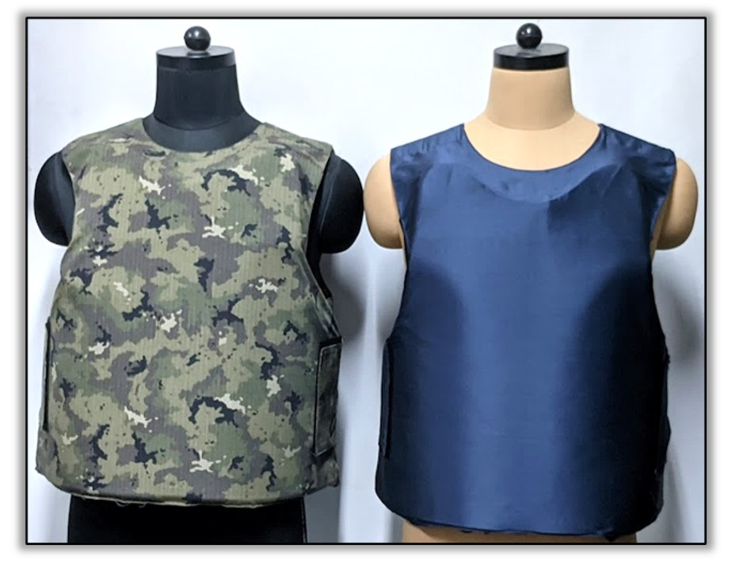
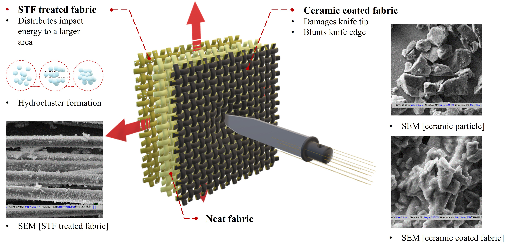

Lightweight body armour systems using high-performance fibres and hybrid textile architectures to achieve effective ballistic protection with minimal back-face deformation.
Flexible stab-resistant textile armour through synergistic use of high-performance fabrics, ceramic reinforcements, and functional fluids.
